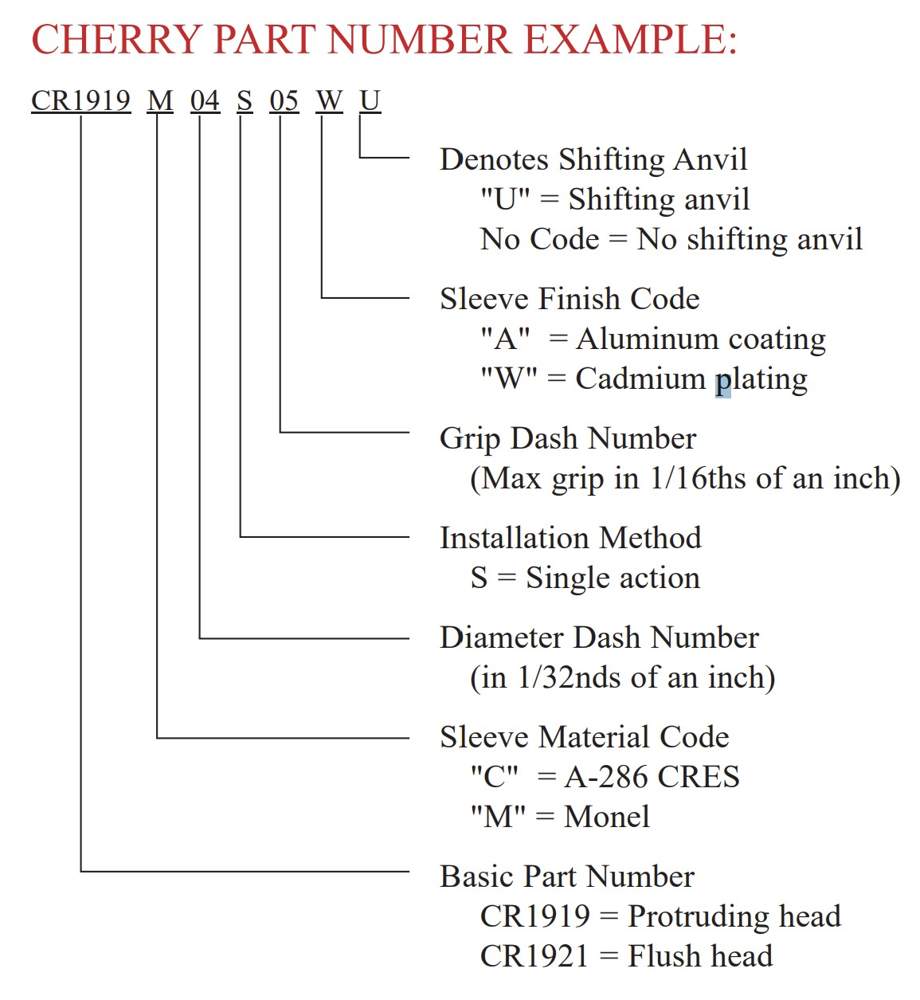
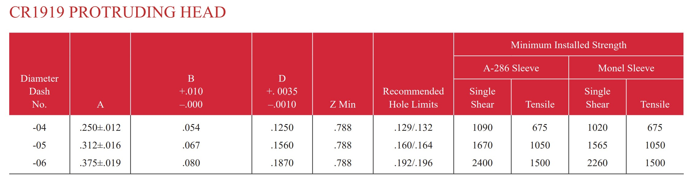

Ref : https://www.cherryaerospace.com/docs/catalogs/CA-1035.pdf
http://www.protooltech.com/pdfcherry.php
https://blog.naver.com/kimruf/222539740664
CR1919 rivet


1 lbf = 0.453599 kg * 중력가속도 = 4.45N